European News Dashboard
Daily view
Last update: 01 Apr 2026, 19:42 CEST
🇮🇹 Italy — 01 Apr 2026
Updated: 01 Apr 2026, 19:42 CESTWordcloud
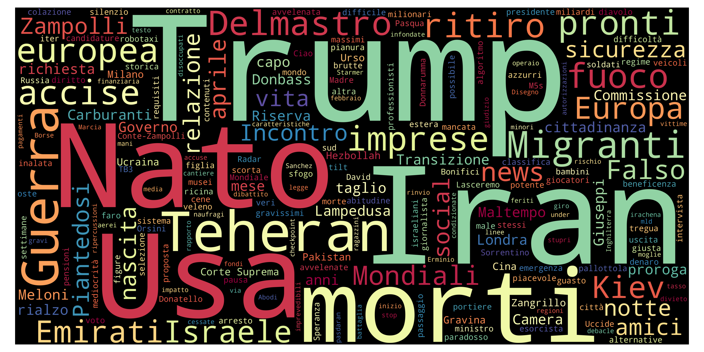
Top 10 unigrams
| Term | Frequency |
|---|---|
| trump | 14 |
| iran | 11 |
| usa | 7 |
| nato | 7 |
| morto | 5 |
| teheran | 5 |
| guerra | 4 |
| migranti | 4 |
| ritiro | 3 |
| delmastro | 3 |
Top 10 phrases
| Term | Frequency |
|---|---|
| corte suprema | 2 |
Top 10 new terms (not present on previous day)
| Term | Current day frequency |
|---|---|
| teheran | 5 |
| migranti | 4 |
| ritiro | 3 |
| fuoco | 3 |
| europeo | 3 |
| cittadinanza | 2 |
| riserva | 2 |
| hezbollah | 2 |
| carburanti | 2 |
| zampolli | 2 |
Top 10 increasing terms (vs previous day)
| Term | Difference | Current day frequency | Previous day frequency |
|---|---|---|---|
| trump | 12 | 14 | 2 |
| nato | 6 | 7 | 1 |
| morto | 3 | 5 | 2 |
| delmastro | 1 | 3 | 2 |
| europa | 1 | 3 | 2 |
| news | 1 | 2 | 1 |
| nascita | 1 | 2 | 1 |
| mondiali | 1 | 2 | 1 |
| pronto | 1 | 3 | 2 |
| kiev | 1 | 3 | 2 |
Top 10 decreasing terms (vs previous day)
| Term | Difference | Current day frequency | Previous day frequency |
|---|---|---|---|
| morte | -6 | 1 | 7 |
| usa | -6 | 7 | 13 |
| governo | -6 | 2 | 8 |
| figlio | -3 | 1 | 4 |
| israele | -3 | 3 | 6 |
| sigonella | -3 | 1 | 4 |
| guerra | -3 | 4 | 7 |
| meloni | -3 | 2 | 5 |
| ministro | -3 | 1 | 4 |
| pasqua | -2 | 1 | 3 |
🇬🇧 UK — 01 Apr 2026
Updated: 01 Apr 2026, 19:42 CESTWordcloud
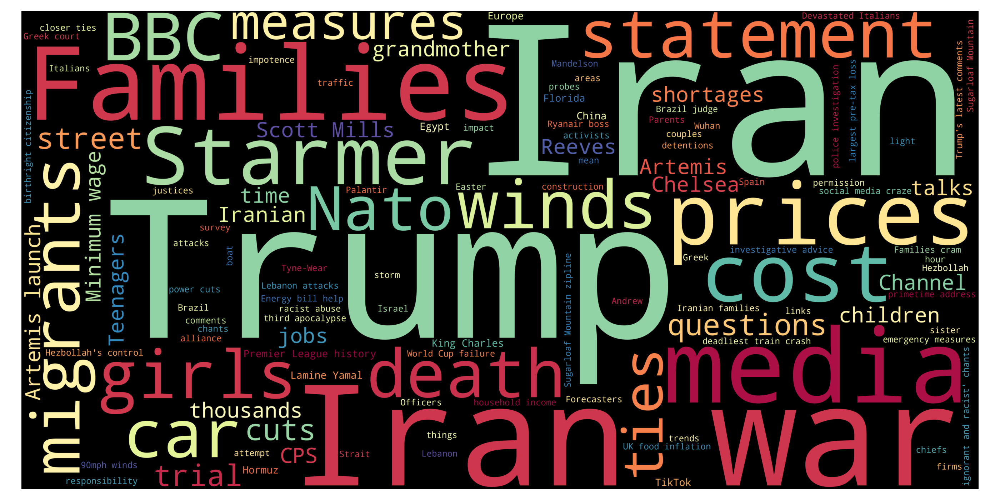
Top 10 unigrams
| Term | Frequency |
|---|---|
| iran | 18 |
| trump | 14 |
| family | 6 |
| medium | 6 |
| price | 6 |
| cost | 5 |
| starmer | 5 |
| statement | 4 |
| girl | 4 |
| car | 4 |
Top 10 phrases
| Term | Frequency |
|---|---|
| iran war | 11 |
| scott mills | 3 |
| artemis launch | 3 |
| minimum wage | 3 |
| premier league history | 3 |
| lamine yamal | 3 |
| king charles | 3 |
| closer ties | 2 |
| investigative advice | 2 |
| devastated italians | 2 |
Top 10 new terms (not present on previous day)
| Term | Current day frequency |
|---|---|
| cost | 5 |
| nato | 4 |
| wind | 4 |
| statement | 4 |
| egypt | 3 |
| minimum wage | 3 |
| florida | 3 |
| artemis launch | 3 |
| measure | 3 |
| lamine yamal | 3 |
Top 10 increasing terms (vs previous day)
| Term | Difference | Current day frequency | Previous day frequency |
|---|---|---|---|
| trump | 7 | 14 | 7 |
| family | 5 | 6 | 1 |
| death | 3 | 4 | 1 |
| girl | 3 | 4 | 1 |
| medium | 3 | 6 | 3 |
| migrant | 3 | 4 | 1 |
| cut | 2 | 3 | 1 |
| price | 2 | 6 | 4 |
| street | 2 | 3 | 1 |
| question | 2 | 3 | 1 |
Top 10 decreasing terms (vs previous day)
| Term | Difference | Current day frequency | Previous day frequency |
|---|---|---|---|
| april | -7 | 1 | 8 |
| arrest | -4 | 1 | 5 |
| victim | -3 | 1 | 4 |
| china | -2 | 3 | 5 |
| pupil | -2 | 1 | 3 |
| risk | -2 | 1 | 3 |
| supply | -2 | 1 | 3 |
| israel | -2 | 2 | 4 |
| teacher | -2 | 1 | 3 |
| minister | -2 | 1 | 3 |
🇮🇹 Italy — 31 Mar 2026
Updated: 01 Apr 2026, 19:42 CESTWordcloud
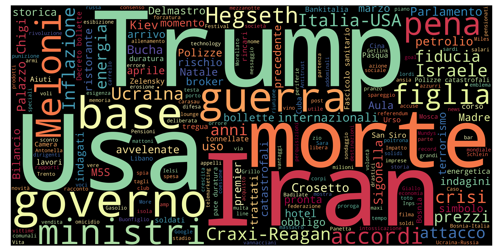
Top 10 unigrams
| Term | Frequency |
|---|---|
| usa | 13 |
| iran | 11 |
| governo | 8 |
| guerra | 7 |
| morte | 7 |
| base | 6 |
| israele | 6 |
| meloni | 5 |
| pena | 4 |
| ministro | 4 |
Top 10 phrases
| Term | Frequency |
|---|---|
| italia usa | 3 |
| palazzo chigi | 3 |
| giornalista americana | 2 |
| decreto bollette | 2 |
| craxi reagan | 2 |
| pace duratura | 2 |
| dl bollette | 2 |
Top 10 new terms (not present on previous day)
| Term | Current day frequency |
|---|---|
| base | 6 |
| iraq | 4 |
| lavoro | 4 |
| crisi | 4 |
| sigonella | 4 |
| prezzo | 3 |
| palazzo chigi | 3 |
| internazionale | 3 |
| cina | 3 |
| simbolo | 3 |
Top 10 increasing terms (vs previous day)
| Term | Difference | Current day frequency | Previous day frequency |
|---|---|---|---|
| usa | 7 | 13 | 6 |
| guerra | 5 | 7 | 2 |
| governo | 4 | 8 | 4 |
| morte | 3 | 7 | 4 |
| ministro | 3 | 4 | 1 |
| figlio | 3 | 4 | 1 |
| meloni | 3 | 5 | 2 |
| americano | 2 | 3 | 1 |
| accordo | 2 | 3 | 1 |
| ucraina | 2 | 3 | 1 |
Top 10 decreasing terms (vs previous day)
| Term | Difference | Current day frequency | Previous day frequency |
|---|---|---|---|
| cuba | -4 | 2 | 6 |
| scuola | -3 | 1 | 4 |
| russo | -3 | 1 | 4 |
| kharg | -2 | 1 | 3 |
| aiuto | -2 | 2 | 4 |
| piano | -2 | 1 | 3 |
| pizzaballa | -1 | 1 | 2 |
| news | -1 | 1 | 2 |
| sfida | -1 | 1 | 2 |
| casco | -1 | 1 | 2 |
🇬🇧 UK — 31 Mar 2026
Updated: 01 Apr 2026, 19:42 CESTWordcloud
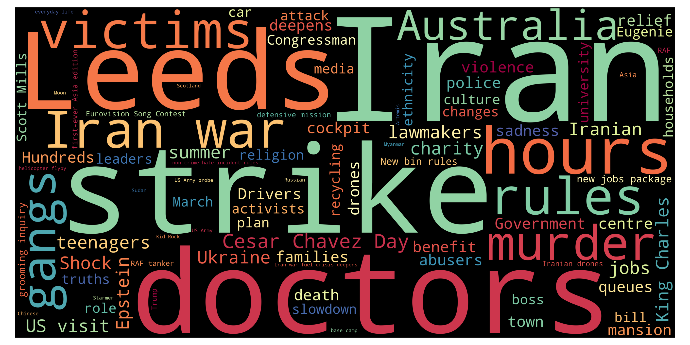
Top 10 unigrams
| Term | Frequency |
|---|---|
| iran | 17 |
| april | 8 |
| trump | 7 |
| troop | 5 |
| police | 5 |
| rule | 5 |
| arrest | 5 |
| france | 5 |
| china | 5 |
| price | 4 |
Top 10 phrases
| Term | Frequency |
|---|---|
| iran war | 12 |
| middle east | 7 |
| scott mills | 4 |
| white house | 4 |
| king charles | 4 |
| southern lebanon | 3 |
| tiger woods | 3 |
| king state visit | 3 |
| scottish crime boss | 3 |
| middle east crisis | 3 |
Top 10 new terms (not present on previous day)
| Term | Current day frequency |
|---|---|
| april | 8 |
| china | 5 |
| rule | 5 |
| arrest | 5 |
| police | 5 |
| oil | 4 |
| white house | 4 |
| europe | 4 |
| car | 4 |
| gulf | 4 |
Top 10 increasing terms (vs previous day)
| Term | Difference | Current day frequency | Previous day frequency |
|---|---|---|---|
| iran war | 7 | 12 | 5 |
| troop | 4 | 5 | 1 |
| middle east | 3 | 7 | 4 |
| france | 3 | 5 | 2 |
| increase | 3 | 4 | 1 |
| time | 3 | 4 | 1 |
| risk | 2 | 3 | 1 |
| medium | 2 | 3 | 1 |
| bill | 2 | 4 | 2 |
| king charles | 2 | 4 | 2 |
Top 10 decreasing terms (vs previous day)
| Term | Difference | Current day frequency | Previous day frequency |
|---|---|---|---|
| attack | -6 | 2 | 8 |
| bbc | -6 | 3 | 9 |
| government | -3 | 1 | 4 |
| survivor | -3 | 1 | 4 |
| iran | -3 | 17 | 20 |
| family | -3 | 1 | 4 |
| australia | -3 | 2 | 5 |
| russian | -3 | 2 | 5 |
| driver | -2 | 1 | 3 |
| cut | -2 | 1 | 3 |
🇮🇹 Italy — 30 Mar 2026
Updated: 01 Apr 2026, 19:42 CESTWordcloud
Top 10 unigrams
| Term | Frequency |
|---|---|
| iran | 9 |
| israele | 6 |
| cuba | 6 |
| usa | 6 |
| unifil | 4 |
| morte | 4 |
| pena | 4 |
| pasqua | 4 |
| sala | 4 |
| ballo | 4 |
Top 10 phrases
| Term | Frequency |
|---|---|
| casa bianca | 4 |
| legge elettorale | 3 |
| santo sepolcro | 3 |
| caschi blu | 2 |
| caso delmastro | 2 |
| regione piemonte | 2 |
| elena chiorino | 2 |
| voto anticipato | 2 |
Top 10 new terms (not present on previous day)
| Term | Current day frequency |
|---|---|
| cuba | 6 |
| casa bianca | 4 |
| russo | 4 |
| unifil | 4 |
| ballo | 4 |
| sala | 4 |
| scuola | 4 |
| strage | 4 |
| aiuto | 4 |
| legge elettorale | 3 |
Top 10 increasing terms (vs previous day)
| Term | Difference | Current day frequency | Previous day frequency |
|---|---|---|---|
| iran | 3 | 9 | 6 |
| governo | 3 | 4 | 1 |
| pasqua | 2 | 4 | 2 |
| piano | 2 | 3 | 1 |
| arresto | 1 | 2 | 1 |
| drone | 1 | 2 | 1 |
| morte | 1 | 4 | 3 |
| sfida | 1 | 2 | 1 |
| pace | 1 | 3 | 2 |
| francia | 1 | 3 | 2 |
Top 10 decreasing terms (vs previous day)
| Term | Difference | Current day frequency | Previous day frequency |
|---|---|---|---|
| meloni | -7 | 2 | 9 |
| israele | -7 | 6 | 13 |
| cardinale | -5 | 1 | 6 |
| santo sepolcro | -5 | 3 | 8 |
| guerra | -5 | 2 | 7 |
| anno | -3 | 3 | 6 |
| fermo | -2 | 1 | 3 |
| netanyahu | -2 | 2 | 4 |
| papa | -2 | 1 | 3 |
| ambasciatore | -2 | 1 | 3 |
🇬🇧 UK — 30 Mar 2026
Updated: 01 Apr 2026, 19:42 CESTWordcloud
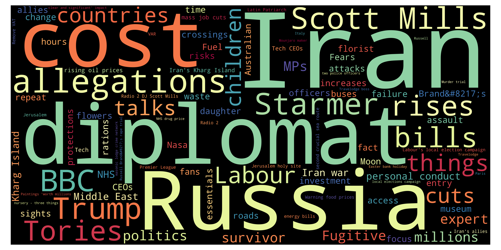
Top 10 unigrams
| Term | Frequency |
|---|---|
| iran | 20 |
| bbc | 9 |
| attack | 8 |
| price | 6 |
| trump | 6 |
| million | 5 |
| allegation | 5 |
| cost | 5 |
| australia | 5 |
| russian | 5 |
Top 10 phrases
| Term | Frequency |
|---|---|
| scott mills | 5 |
| iran war | 5 |
| zack polanski | 4 |
| middle east | 4 |
| death penalty | 3 |
| identical twins | 3 |
| céline dion | 2 |
| deadly attacks | 2 |
| israeli law | 2 |
| barbie dream fest | 2 |
Top 10 new terms (not present on previous day)
| Term | Current day frequency |
|---|---|
| bbc | 9 |
| million | 5 |
| iran war | 5 |
| russian | 5 |
| scott mills | 5 |
| allegation | 5 |
| chinese | 4 |
| diplomat | 4 |
| middle east | 4 |
| russia | 4 |
Top 10 increasing terms (vs previous day)
| Term | Difference | Current day frequency | Previous day frequency |
|---|---|---|---|
| iran | 8 | 20 | 12 |
| attack | 6 | 8 | 2 |
| trump | 3 | 6 | 3 |
| family | 3 | 4 | 1 |
| australia | 3 | 5 | 2 |
| election | 2 | 3 | 1 |
| fund | 2 | 3 | 1 |
| expert | 2 | 3 | 1 |
| collapse | 2 | 3 | 1 |
| price | 2 | 6 | 4 |
Top 10 decreasing terms (vs previous day)
| Term | Difference | Current day frequency | Previous day frequency |
|---|---|---|---|
| israeli | -5 | 2 | 7 |
| lebanon | -4 | 2 | 6 |
| pedestrian | -3 | 1 | 4 |
| medium | -2 | 1 | 3 |
| nhs | -2 | 2 | 4 |
| time | -2 | 1 | 3 |
| image | -2 | 1 | 3 |
| uae | -2 | 1 | 3 |
| child | -1 | 2 | 3 |
| tory | -1 | 1 | 2 |
🇮🇹 Italy — 29 Mar 2026
Updated: 01 Apr 2026, 19:42 CESTWordcloud
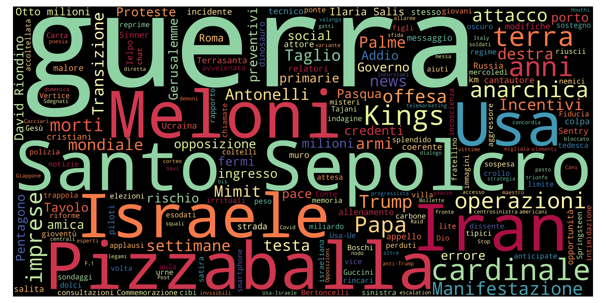
Top 10 unigrams
| Term | Frequency |
|---|---|
| israele | 13 |
| meloni | 9 |
| guerra | 7 |
| usa | 7 |
| cardinale | 6 |
| anno | 6 |
| iran | 6 |
| legge | 4 |
| anarchico | 4 |
| kings | 4 |
Top 10 phrases
| Term | Frequency |
|---|---|
| santo sepolcro | 8 |
| david riondino | 4 |
| decreto sicurezza | 3 |
| elezioni anticipate | 2 |
| profondo dolore | 2 |
| spiacevole incidente | 2 |
| mar rosso | 2 |
| otto milioni | 2 |
Top 10 new terms (not present on previous day)
| Term | Current day frequency |
|---|---|
| santo sepolcro | 8 |
| cardinale | 6 |
| pizzaballa | 4 |
| anarchico | 4 |
| david riondino | 4 |
| kings | 4 |
| netanyahu | 4 |
| legge | 4 |
| addio | 3 |
| morte | 3 |
Top 10 increasing terms (vs previous day)
| Term | Difference | Current day frequency | Previous day frequency |
|---|---|---|---|
| israele | 11 | 13 | 2 |
| anno | 5 | 6 | 1 |
| meloni | 4 | 9 | 5 |
| teheran | 2 | 4 | 2 |
| usa | 2 | 7 | 5 |
| ambasciatore | 2 | 3 | 1 |
| manifestazione | 1 | 3 | 2 |
| terra | 1 | 2 | 1 |
| preventivo | 1 | 2 | 1 |
| milione | 1 | 2 | 1 |
Top 10 decreasing terms (vs previous day)
| Term | Difference | Current day frequency | Previous day frequency |
|---|---|---|---|
| guerra | -6 | 7 | 13 |
| roma | -5 | 2 | 7 |
| corteo | -5 | 1 | 6 |
| governo | -4 | 1 | 5 |
| politica | -2 | 1 | 3 |
| ucraina | -2 | 1 | 3 |
| dialogo | -2 | 1 | 3 |
| drone | -1 | 1 | 2 |
| migliaio | -1 | 1 | 2 |
| polizia | -1 | 1 | 2 |
🇬🇧 UK — 29 Mar 2026
Updated: 01 Apr 2026, 19:42 CESTWordcloud
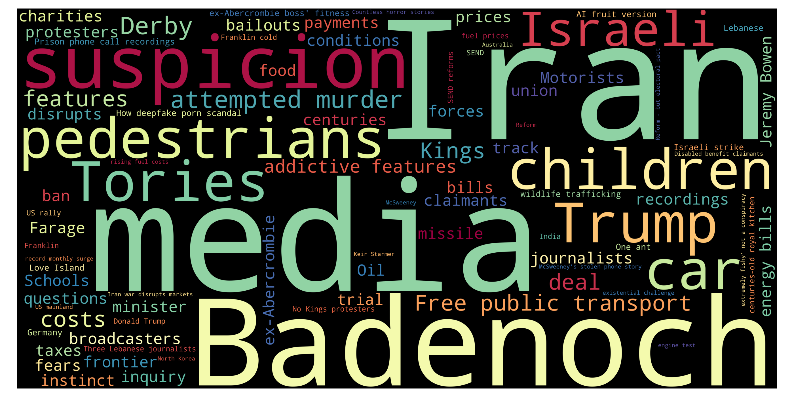
Top 10 unigrams
| Term | Frequency |
|---|---|
| iran | 12 |
| israeli | 7 |
| journalist | 6 |
| lebanon | 6 |
| derby | 5 |
| spur | 4 |
| funeral | 4 |
| price | 4 |
| pedestrian | 4 |
| cost | 4 |
Top 10 phrases
| Term | Frequency |
|---|---|
| israeli strike | 4 |
| free transport | 4 |
| fuel prices | 4 |
| counter terror police | 3 |
| palm sunday | 3 |
| war images | 3 |
| keir starmer | 3 |
| jeremy bowen | 2 |
| de zerbi | 2 |
| permanent boss | 2 |
Top 10 new terms (not present on previous day)
| Term | Current day frequency |
|---|---|
| derby | 5 |
| spur | 4 |
| cost | 4 |
| funeral | 4 |
| fuel prices | 4 |
| badenoch | 4 |
| pedestrian | 4 |
| free transport | 4 |
| nhs | 4 |
| child | 3 |
Top 10 increasing terms (vs previous day)
| Term | Difference | Current day frequency | Previous day frequency |
|---|---|---|---|
| lebanon | 4 | 6 | 2 |
| iran | 3 | 12 | 9 |
| price | 3 | 4 | 1 |
| school | 1 | 2 | 1 |
| site | 1 | 2 | 1 |
| suspicion | 1 | 2 | 1 |
| photo | 1 | 2 | 1 |
| journalist | 1 | 6 | 5 |
| feature | 1 | 2 | 1 |
| force | 1 | 2 | 1 |
Top 10 decreasing terms (vs previous day)
| Term | Difference | Current day frequency | Previous day frequency |
|---|---|---|---|
| london | -8 | 3 | 11 |
| thousand | -5 | 1 | 6 |
| trump | -5 | 3 | 8 |
| king | -4 | 2 | 6 |
| israeli | -2 | 7 | 9 |
| defiance | -2 | 1 | 3 |
| restaurant | -1 | 1 | 2 |
| deepen | -1 | 1 | 2 |
| broadcaster | -1 | 1 | 2 |
| medium | -1 | 3 | 4 |
🇮🇹 Italy — 28 Mar 2026
Updated: 01 Apr 2026, 19:42 CESTWordcloud
Top 10 unigrams
| Term | Frequency |
|---|---|
| guerra | 13 |
| roma | 7 |
| iran | 7 |
| corteo | 6 |
| referendum | 5 |
| governo | 5 |
| meloni | 5 |
| presidente | 5 |
| usa | 5 |
| anm | 5 |
Top 10 phrases
| Term | Frequency |
|---|---|
| ilaria salis | 6 |
| decreto fiscale | 3 |
| stretto di trump | 2 |
| no kings | 2 |
| principato di monaco | 2 |
| forti esplosioni | 2 |
| paese estero | 2 |
Top 10 new terms (not present on previous day)
| Term | Current day frequency |
|---|---|
| guerra | 13 |
| iran | 7 |
| roma | 7 |
| corteo | 6 |
| ilaria salis | 6 |
| referendum | 5 |
| meloni | 5 |
| governo | 5 |
| usa | 5 |
| anm | 5 |
Top 10 increasing terms (vs previous day)
No significantly increasing terms.
Top 10 decreasing terms (vs previous day)
No significantly decreasing terms.
🇬🇧 UK — 28 Mar 2026
Updated: 01 Apr 2026, 19:42 CESTWordcloud
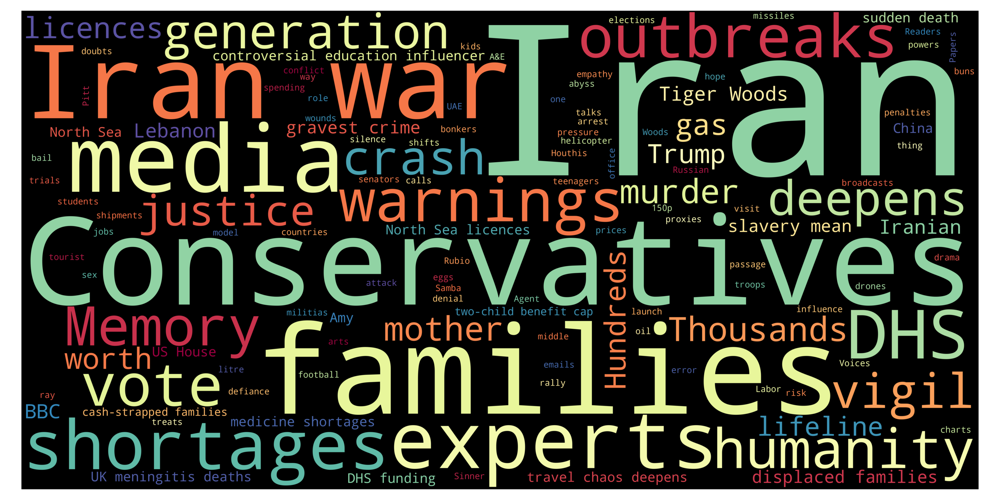
Top 10 unigrams
| Term | Frequency |
|---|---|
| london | 11 |
| death | 9 |
| israeli | 9 |
| iran | 9 |
| trump | 8 |
| thousand | 6 |
| king | 6 |
| lebanese | 6 |
| journalist | 5 |
| leed | 5 |
Top 10 phrases
| Term | Frequency |
|---|---|
| israeli strike | 4 |
| lebanese journalists | 4 |
| iran war | 4 |
| car crash | 3 |
| murder inquiry | 3 |
| chip shop | 3 |
| red sea shipping | 2 |
| global economy | 2 |
| red sea | 2 |
| houthi threat | 2 |
Top 10 new terms (not present on previous day)
| Term | Current day frequency |
|---|---|
| israeli | 9 |
| death | 9 |
| king | 6 |
| lebanese | 6 |
| thousand | 6 |
| leed | 5 |
| leeds | 5 |
| israeli strike | 4 |
| gaza | 4 |
| lebanese journalists | 4 |
Top 10 increasing terms (vs previous day)
| Term | Difference | Current day frequency | Previous day frequency |
|---|---|---|---|
| london | 10 | 11 | 1 |
| journalist | 4 | 5 | 1 |
| warning | 3 | 4 | 1 |
| mother | 1 | 2 | 1 |
| pressure | 1 | 2 | 1 |
| medium | 1 | 4 | 3 |
| patient | 1 | 2 | 1 |
| trump | 1 | 8 | 7 |
Top 10 decreasing terms (vs previous day)
| Term | Difference | Current day frequency | Previous day frequency |
|---|---|---|---|
| iran | -17 | 9 | 26 |
| iran war | -8 | 4 | 12 |
| starmer | -3 | 1 | 4 |
| whale | -3 | 2 | 5 |
| minister | -2 | 3 | 5 |
| -1 | 1 | 2 | |
| chart | -1 | 1 | 2 |
| vaccine | -1 | 1 | 2 |
| photo | -1 | 1 | 2 |
| cuba | -1 | 2 | 3 |
🇮🇹 Italy — 27 Mar 2026
Updated: 01 Apr 2026, 19:42 CESTWordcloud
Top 10 unigrams
| Term | Frequency |
|---|---|
| comunicato | 1 |
| gerusalemme | 1 |
| capo | 1 |
| chiese | 1 |
| ultimo | 1 |
| morte | 1 |
Top 10 phrases
No phrases found for this day.
Top 10 new terms (not present on previous day)
| Term | Current day frequency |
|---|---|
| comunicato | 1 |
| gerusalemme | 1 |
| morte | 1 |
| chiese | 1 |
Top 10 increasing terms (vs previous day)
No significantly increasing terms.
Top 10 decreasing terms (vs previous day)
No significantly decreasing terms.
🇬🇧 UK — 27 Mar 2026
Updated: 01 Apr 2026, 19:42 CESTWordcloud
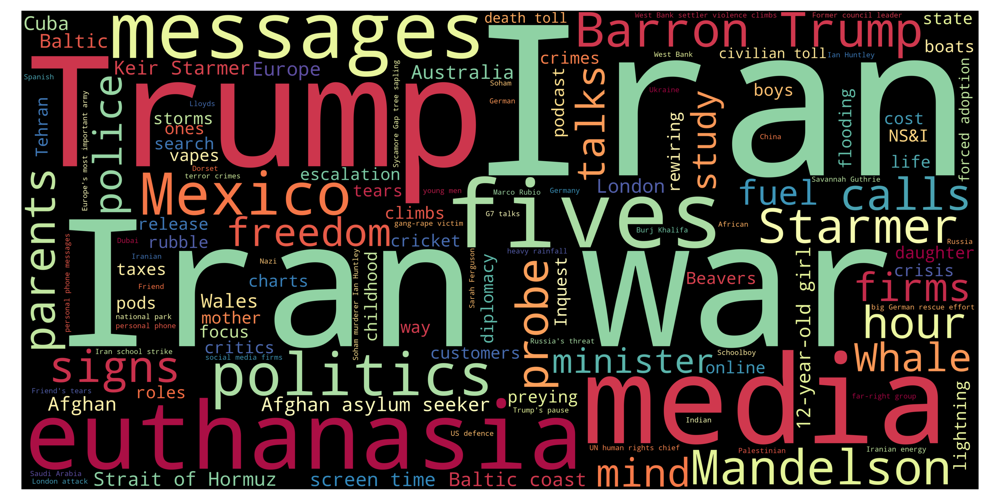
Top 10 unigrams
| Term | Frequency |
|---|---|
| iran | 26 |
| trump | 7 |
| nazi | 6 |
| whale | 5 |
| child | 5 |
| minister | 5 |
| parent | 4 |
| life | 4 |
| freedom | 4 |
| cost | 4 |
Top 10 phrases
| Term | Frequency |
|---|---|
| iran war | 12 |
| nazi salute | 5 |
| kash patel | 4 |
| screen time | 4 |
| reform candidate | 4 |
| mohamed al fayed | 4 |
| baltic coast | 3 |
| keir starmer | 3 |
| tiger woods | 2 |
| kash patel personal emails | 2 |
Top 10 new terms (not present on previous day)
| Term | Current day frequency |
|---|---|
| nazi | 6 |
| nazi salute | 5 |
| whale | 5 |
| screen time | 4 |
| rubio | 4 |
| fbi | 4 |
| fuel | 4 |
| mohamed al fayed | 4 |
| reform candidate | 4 |
| kash patel | 4 |
Top 10 increasing terms (vs previous day)
| Term | Difference | Current day frequency | Previous day frequency |
|---|---|---|---|
| child | 4 | 5 | 1 |
| freedom | 3 | 4 | 1 |
| iran | 3 | 26 | 23 |
| life | 3 | 4 | 1 |
| sign | 2 | 3 | 1 |
| iran war | 1 | 12 | 11 |
| critic | 1 | 2 | 1 |
| probe | 1 | 2 | 1 |
| vaccine | 1 | 2 | 1 |
| keir starmer | 1 | 3 | 2 |
Top 10 decreasing terms (vs previous day)
| Term | Difference | Current day frequency | Previous day frequency |
|---|---|---|---|
| medium | -5 | 3 | 8 |
| middle east | -4 | 2 | 6 |
| ns&i | -4 | 2 | 6 |
| trump | -4 | 7 | 11 |
| support | -3 | 1 | 4 |
| election | -3 | 2 | 5 |
| country | -3 | 1 | 4 |
| power | -2 | 1 | 3 |
| starmer | -2 | 4 | 6 |
| sarah ferguson | -2 | 2 | 4 |
🇮🇹 Italy — 26 Mar 2026
Updated: 01 Apr 2026, 19:42 CESTWordcloud
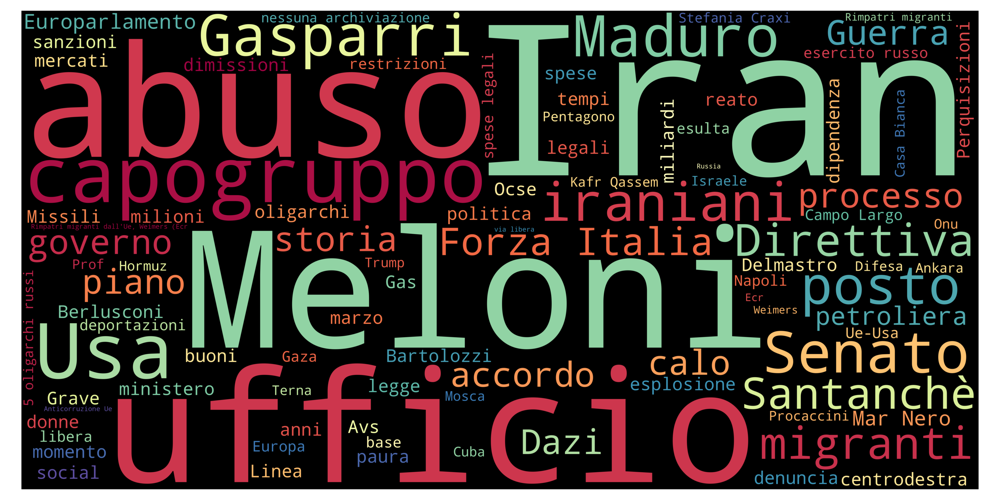
Top 10 unigrams
| Term | Frequency |
|---|---|
| iran | 15 |
| meloni | 13 |
| ufficio | 7 |
| abuso | 7 |
| interim | 6 |
| capogruppo | 6 |
| attacco | 5 |
| guerra | 5 |
| gasparri | 5 |
| usa | 5 |
Top 10 phrases
| Term | Frequency |
|---|---|
| forza italia | 5 |
| mar nero | 3 |
| chiara mocchi | 2 |
| casa bianca | 2 |
| campo largo | 2 |
| spese legali | 2 |
| nessuna archiviazione | 2 |
| kafr qassem | 2 |
| oligarchi russi | 2 |
| stefania craxi | 2 |
Top 10 new terms (not present on previous day)
| Term | Current day frequency |
|---|---|
| capogruppo | 6 |
| interim | 6 |
| attacco | 5 |
| forza italia | 5 |
| guerra | 5 |
| iraniano | 4 |
| posto | 4 |
| turismo | 4 |
| direttiva | 4 |
| storia | 4 |
Top 10 increasing terms (vs previous day)
| Term | Difference | Current day frequency | Previous day frequency |
|---|---|---|---|
| iran | 8 | 15 | 7 |
| ufficio | 6 | 7 | 1 |
| abuso | 6 | 7 | 1 |
| gasparri | 4 | 5 | 1 |
| mistero | 2 | 3 | 1 |
| reato | 2 | 3 | 1 |
| senato | 2 | 5 | 3 |
| gas | 1 | 2 | 1 |
| social | 1 | 2 | 1 |
| legge | 1 | 2 | 1 |
Top 10 decreasing terms (vs previous day)
| Term | Difference | Current day frequency | Previous day frequency |
|---|---|---|---|
| santanchè | -8 | 3 | 11 |
| usa | -4 | 5 | 9 |
| dimissione | -4 | 3 | 7 |
| governo | -3 | 3 | 6 |
| ministero | -3 | 2 | 5 |
| daniela | -2 | 1 | 3 |
| 13enne | -2 | 1 | 3 |
| camera | -2 | 1 | 3 |
| energia | -2 | 1 | 3 |
| meloni | -2 | 13 | 15 |
🇬🇧 UK — 26 Mar 2026
Updated: 01 Apr 2026, 19:42 CESTWordcloud
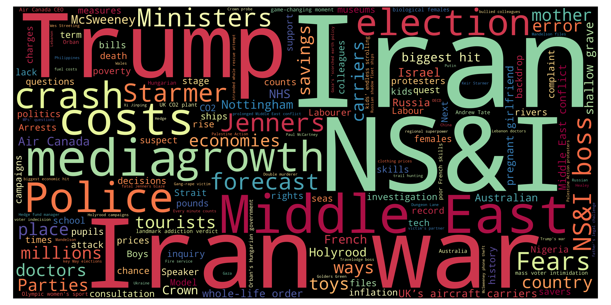
Top 10 unigrams
| Term | Frequency |
|---|---|
| iran | 23 |
| trump | 11 |
| medium | 8 |
| nhs | 7 |
| ns&i | 6 |
| starmer | 6 |
| euthanasia | 5 |
| election | 5 |
| minister | 5 |
| cost | 5 |
Top 10 phrases
| Term | Frequency |
|---|---|
| iran war | 11 |
| ns i | 6 |
| middle east | 6 |
| ns boss | 4 |
| sarah ferguson | 4 |
| nhs doctor | 4 |
| andrew tate | 4 |
| biggest hit | 3 |
| legal battle | 3 |
| aircraft carriers | 3 |
Top 10 new terms (not present on previous day)
| Term | Current day frequency |
|---|---|
| middle east | 6 |
| ns&i | 6 |
| ns i | 6 |
| euthanasia | 5 |
| hamas | 4 |
| support | 4 |
| ukraine | 4 |
| country | 4 |
| nhs doctor | 4 |
| ns boss | 4 |
Top 10 increasing terms (vs previous day)
| Term | Difference | Current day frequency | Previous day frequency |
|---|---|---|---|
| iran war | 6 | 11 | 5 |
| iran | 6 | 23 | 17 |
| nhs | 5 | 7 | 2 |
| trump | 5 | 11 | 6 |
| starmer | 4 | 6 | 2 |
| medium | 4 | 8 | 4 |
| minister | 3 | 5 | 2 |
| election | 2 | 5 | 3 |
| epstein | 2 | 4 | 2 |
| power | 2 | 3 | 1 |
Top 10 decreasing terms (vs previous day)
| Term | Difference | Current day frequency | Previous day frequency |
|---|---|---|---|
| donation | -6 | 1 | 7 |
| talk | -5 | 1 | 6 |
| bill | -3 | 2 | 5 |
| party | -3 | 1 | 4 |
| time | -2 | 1 | 3 |
| reform | -2 | 2 | 4 |
| child | -2 | 1 | 3 |
| killer | -2 | 1 | 3 |
| labour | -1 | 2 | 3 |
| politic | -1 | 2 | 3 |
🇮🇹 Italy — 25 Mar 2026
Updated: 01 Apr 2026, 19:42 CESTWordcloud
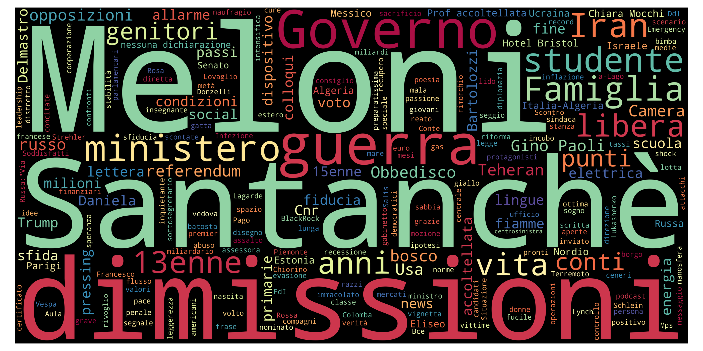
Top 10 unigrams
| Term | Frequency |
|---|---|
| meloni | 15 |
| santanchè | 11 |
| usa | 9 |
| dimissione | 7 |
| iran | 7 |
| governo | 6 |
| ministero | 5 |
| anno | 4 |
| studente | 4 |
| famiglia | 4 |
Top 10 phrases
| Term | Frequency |
|---|---|
| futuro nazionale | 3 |
| gino paoli | 2 |
| prof accoltellata | 2 |
| hotel bristol | 2 |
| chiara mocchi | 2 |
| fine guerra | 2 |
| casa bianca | 2 |
| nessuna dichiarazione | 2 |
Top 10 new terms (not present on previous day)
| Term | Current day frequency |
|---|---|
| ministero | 5 |
| studente | 4 |
| genitore | 3 |
| conto | 3 |
| camera | 3 |
| daniela | 3 |
| 13enne | 3 |
| algeria | 3 |
| condizione | 3 |
| energia | 3 |
Top 10 increasing terms (vs previous day)
| Term | Difference | Current day frequency | Previous day frequency |
|---|---|---|---|
| santanchè | 8 | 11 | 3 |
| usa | 2 | 9 | 7 |
| punto | 2 | 3 | 1 |
| famiglia | 2 | 4 | 2 |
| bosco | 2 | 3 | 1 |
| governo | 2 | 6 | 4 |
| news | 1 | 2 | 1 |
| fiamma | 1 | 2 | 1 |
| dimissione | 1 | 7 | 6 |
| piano | 1 | 2 | 1 |
Top 10 decreasing terms (vs previous day)
| Term | Difference | Current day frequency | Previous day frequency |
|---|---|---|---|
| referendum | -11 | 2 | 13 |
| delmastro | -10 | 2 | 12 |
| iran | -8 | 7 | 15 |
| bartolozzi | -6 | 2 | 8 |
| nordio | -6 | 3 | 9 |
| trump | -4 | 3 | 7 |
| sottosegretario | -4 | 1 | 5 |
| sconfitta | -3 | 1 | 4 |
| voto | -3 | 2 | 5 |
| leggerezza | -2 | 1 | 3 |
🇬🇧 UK — 25 Mar 2026
Updated: 01 Apr 2026, 19:42 CESTWordcloud
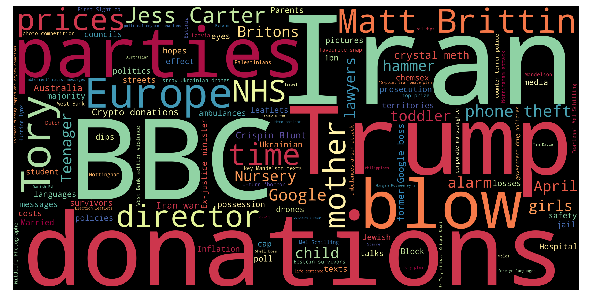
Top 10 unigrams
| Term | Frequency |
|---|---|
| iran | 17 |
| bbc | 9 |
| donation | 7 |
| doctor | 6 |
| talk | 6 |
| blow | 6 |
| trump | 6 |
| bill | 5 |
| humanity | 5 |
| canterbury | 5 |
Top 10 phrases
| Term | Frequency |
|---|---|
| gravest crime | 5 |
| iran war | 5 |
| six strike | 4 |
| resident doctors | 4 |
| morgan mcsweeneys | 4 |
| morgan mcsweeney stolen phone | 4 |
| andrew tate | 3 |
| matt brittin | 3 |
| landmark media addiction trial | 2 |
| female archbishop | 2 |
Top 10 new terms (not present on previous day)
| Term | Current day frequency |
|---|---|
| bbc | 9 |
| donation | 7 |
| doctor | 6 |
| blow | 6 |
| humanity | 5 |
| gravest crime | 5 |
| bill | 5 |
| canterbury | 5 |
| morgan mcsweeney stolen phone | 4 |
| morgan mcsweeneys | 4 |
Top 10 increasing terms (vs previous day)
| Term | Difference | Current day frequency | Previous day frequency |
|---|---|---|---|
| medium | 3 | 4 | 1 |
| party | 3 | 4 | 1 |
| time | 2 | 3 | 1 |
| survivor | 1 | 2 | 1 |
| labour | 1 | 3 | 2 |
| talk | 1 | 6 | 5 |
| trump | 1 | 6 | 5 |
| inquiry | 1 | 2 | 1 |
Top 10 decreasing terms (vs previous day)
| Term | Difference | Current day frequency | Previous day frequency |
|---|---|---|---|
| reform | -5 | 4 | 9 |
| politic | -4 | 3 | 7 |
| golders green | -4 | 2 | 6 |
| deal | -3 | 1 | 4 |
| girl | -3 | 2 | 5 |
| life | -2 | 1 | 3 |
| drone | -2 | 2 | 4 |
| mother | -2 | 1 | 3 |
| poll | -1 | 2 | 3 |
| lebanon | -1 | 2 | 3 |
🇮🇹 Italy — 24 Mar 2026
Updated: 01 Apr 2026, 19:42 CESTWordcloud
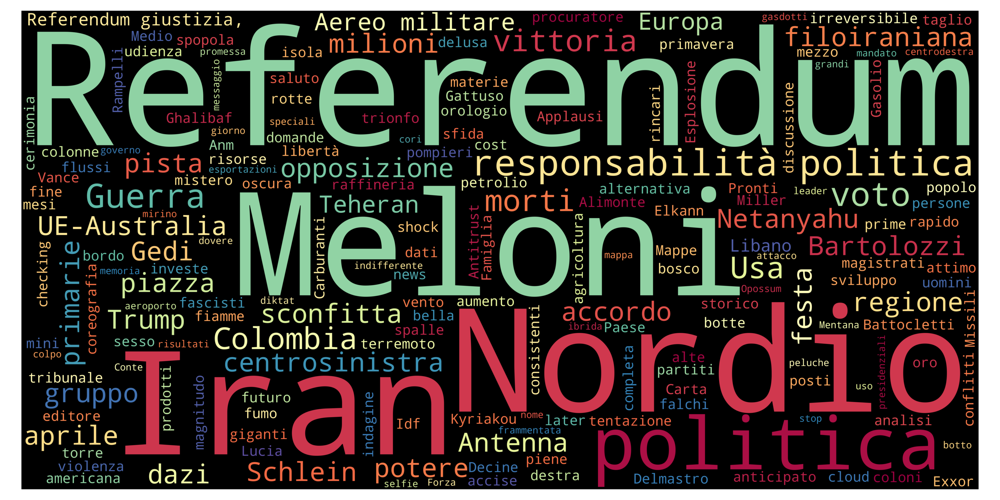
Top 10 unigrams
| Term | Frequency |
|---|---|
| iran | 15 |
| meloni | 14 |
| referendum | 13 |
| delmastro | 12 |
| nordio | 9 |
| guerra | 8 |
| bartolozzi | 8 |
| trump | 7 |
| usa | 7 |
| dimissione | 6 |
Top 10 phrases
| Term | Frequency |
|---|---|
| responsabilità politica | 4 |
| legge elettorale | 3 |
| gino paoli | 3 |
| ue australia | 3 |
| aereo militare | 2 |
| stessa scelta | 2 |
| referendum giustizia | 2 |
| media internazionali | 2 |
| infranta aura invincibilità | 2 |
Top 10 new terms (not present on previous day)
| Term | Current day frequency |
|---|---|
| bartolozzi | 8 |
| ue-australia | 6 |
| dimissione | 6 |
| sottosegretario | 5 |
| von | 4 |
| responsabilità politica | 4 |
| leyen | 4 |
| schlein | 3 |
| milione | 3 |
| ue australia | 3 |
Top 10 increasing terms (vs previous day)
| Term | Difference | Current day frequency | Previous day frequency |
|---|---|---|---|
| delmastro | 10 | 12 | 2 |
| meloni | 7 | 14 | 7 |
| guerra | 7 | 8 | 1 |
| nordio | 7 | 9 | 2 |
| usa | 5 | 7 | 2 |
| referendum | 4 | 13 | 9 |
| sconfitta | 3 | 4 | 1 |
| dazio | 3 | 4 | 1 |
| iran | 3 | 15 | 12 |
| politico | 2 | 4 | 2 |
Top 10 decreasing terms (vs previous day)
| Term | Difference | Current day frequency | Previous day frequency |
|---|---|---|---|
| trump | -4 | 7 | 11 |
| punto | -4 | 1 | 5 |
| mezzo | -3 | 1 | 4 |
| popolo | -3 | 1 | 4 |
| aeroporto | -3 | 1 | 4 |
| teheran | -2 | 2 | 4 |
| pista | -2 | 1 | 3 |
| scontro | -2 | 1 | 3 |
| vittoria | -2 | 5 | 7 |
| pompiere | -1 | 1 | 2 |
🇬🇧 UK — 24 Mar 2026
Updated: 01 Apr 2026, 19:42 CESTWordcloud
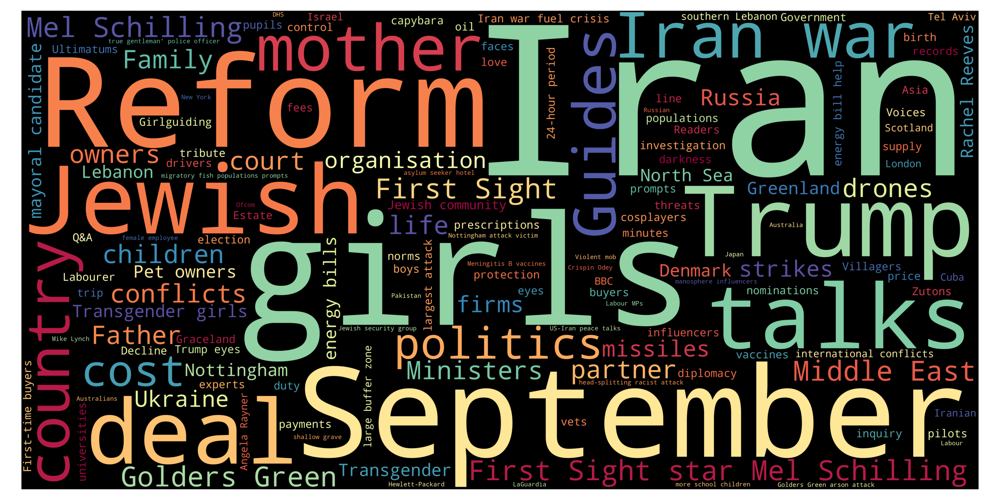
Top 10 unigrams
| Term | Frequency |
|---|---|
| iran | 18 |
| reform | 9 |
| politic | 7 |
| jewish | 7 |
| talk | 5 |
| girl | 5 |
| september | 5 |
| laguardia | 5 |
| trump | 5 |
| drone | 4 |
Top 10 phrases
| Term | Frequency |
|---|---|
| golders green | 6 |
| iran war | 5 |
| middle east | 4 |
| us iran talks | 3 |
| transgender girls | 3 |
| sight mel schilling | 3 |
| mel schilling | 3 |
| southern lebanon | 3 |
| mayoral candidate | 3 |
| rachel reeves | 3 |
Top 10 new terms (not present on previous day)
| Term | Current day frequency |
|---|---|
| golders green | 6 |
| september | 5 |
| country | 4 |
| drone | 4 |
| liverpool | 4 |
| mayoral candidate | 3 |
| lebanon | 3 |
| energy bills | 3 |
| us iran talks | 3 |
| mel schilling | 3 |
Top 10 increasing terms (vs previous day)
| Term | Difference | Current day frequency | Previous day frequency |
|---|---|---|---|
| reform | 8 | 9 | 1 |
| politic | 5 | 7 | 2 |
| girl | 3 | 5 | 2 |
| life | 2 | 3 | 1 |
| family | 2 | 3 | 1 |
| child | 2 | 3 | 1 |
| scotland | 2 | 4 | 2 |
| mother | 2 | 3 | 1 |
| middle east | 1 | 4 | 3 |
| poll | 1 | 3 | 2 |
Top 10 decreasing terms (vs previous day)
| Term | Difference | Current day frequency | Previous day frequency |
|---|---|---|---|
| iran | -14 | 18 | 32 |
| trump | -8 | 5 | 13 |
| london | -6 | 2 | 8 |
| talk | -4 | 5 | 9 |
| starmer | -4 | 2 | 6 |
| share | -3 | 1 | 4 |
| time | -2 | 1 | 3 |
| missile | -2 | 2 | 4 |
| cost | -2 | 3 | 5 |
| minister | -2 | 3 | 5 |
🇮🇹 Italy — 23 Mar 2026
Updated: 01 Apr 2026, 19:42 CESTWordcloud
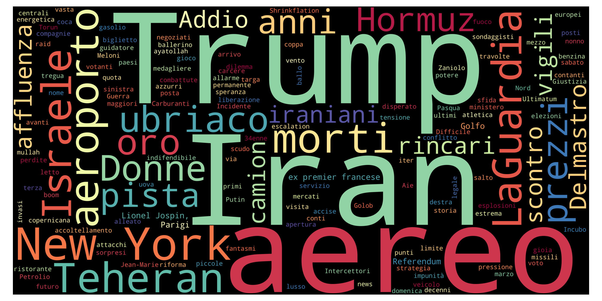
Top 10 unigrams
| Term | Frequency |
|---|---|
| iran | 12 |
| trump | 11 |
| referendum | 9 |
| meloni | 7 |
| vittoria | 7 |
| presidente | 6 |
| voto | 6 |
| punto | 5 |
| morto | 5 |
| londra | 5 |
Top 10 phrases
| Term | Frequency |
|---|---|
| new york | 6 |
| referendum giustizia | 2 |
| aereo militare | 2 |
| oltre soldati | 2 |
| lionel jospin | 2 |
| motivi personali | 2 |
Top 10 new terms (not present on previous day)
| Term | Current day frequency |
|---|---|
| meloni | 7 |
| new york | 6 |
| presidente | 6 |
| punto | 5 |
| londra | 5 |
| colombia | 4 |
| laguardia | 4 |
| mezzo | 4 |
| colloquio | 3 |
| atto | 3 |
Top 10 increasing terms (vs previous day)
| Term | Difference | Current day frequency | Previous day frequency |
|---|---|---|---|
| referendum | 7 | 9 | 2 |
| vittoria | 6 | 7 | 1 |
| trump | 6 | 11 | 5 |
| voto | 3 | 6 | 3 |
| iran | 3 | 12 | 9 |
| morto | 3 | 5 | 2 |
| anno | 3 | 4 | 1 |
| popolo | 3 | 4 | 1 |
| aeroporto | 3 | 4 | 1 |
| premier | 2 | 3 | 1 |
Top 10 decreasing terms (vs previous day)
| Term | Difference | Current day frequency | Previous day frequency |
|---|---|---|---|
| roma | -6 | 2 | 8 |
| affluenza | -4 | 2 | 6 |
| guerra | -3 | 1 | 4 |
| seggio | -3 | 1 | 4 |
| ferito | -2 | 1 | 3 |
| paura | -2 | 1 | 3 |
| centrale | -2 | 1 | 3 |
| usa | -2 | 2 | 4 |
| referendum giustizia | -1 | 2 | 3 |
| salvini | -1 | 1 | 2 |
🇬🇧 UK — 23 Mar 2026
Updated: 01 Apr 2026, 19:42 CESTWordcloud
Top 10 unigrams
| Term | Frequency |
|---|---|
| iran | 32 |
| trump | 13 |
| talk | 9 |
| iranian | 9 |
| london | 8 |
| jewish | 6 |
| onlyfans | 6 |
| starmer | 6 |
| hs2 | 5 |
| minister | 5 |
Top 10 phrases
| Term | Frequency |
|---|---|
| iran war | 6 |
| jewish charity ambulances | 4 |
| iranian missiles | 4 |
| leonid radvinsky | 4 |
| counter terror police | 3 |
| hs trains | 3 |
| onlyfans owner leonid radvinsky | 3 |
| ice agents | 3 |
| lindsay hoyle | 3 |
| london ambulance arson | 3 |
Top 10 new terms (not present on previous day)
| Term | Current day frequency |
|---|---|
| talk | 9 |
| onlyfans | 6 |
| jewish | 6 |
| hs2 | 5 |
| laguardia | 4 |
| jewish charity ambulances | 4 |
| leonid radvinsky | 4 |
| deal | 4 |
| share | 4 |
| tehran | 4 |
Top 10 increasing terms (vs previous day)
| Term | Difference | Current day frequency | Previous day frequency |
|---|---|---|---|
| trump | 9 | 13 | 4 |
| london | 5 | 8 | 3 |
| cost | 4 | 5 | 1 |
| iran | 4 | 32 | 28 |
| bill | 3 | 4 | 1 |
| starmer | 3 | 6 | 3 |
| iranian | 3 | 9 | 6 |
| campaigner | 1 | 2 | 1 |
| girl | 1 | 2 | 1 |
| politic | 1 | 2 | 1 |
Top 10 decreasing terms (vs previous day)
| Term | Difference | Current day frequency | Previous day frequency |
|---|---|---|---|
| israeli | -4 | 2 | 6 |
| child | -3 | 1 | 4 |
| israel | -3 | 3 | 6 |
| datum | -2 | 1 | 3 |
| teacher | -2 | 1 | 3 |
| dhs | -1 | 2 | 3 |
| strike | -1 | 2 | 3 |
| agent | -1 | 3 | 4 |
| contract | -1 | 1 | 2 |
| authority | -1 | 1 | 2 |
🇮🇹 Italy — 22 Mar 2026
Updated: 01 Apr 2026, 19:42 CESTWordcloud
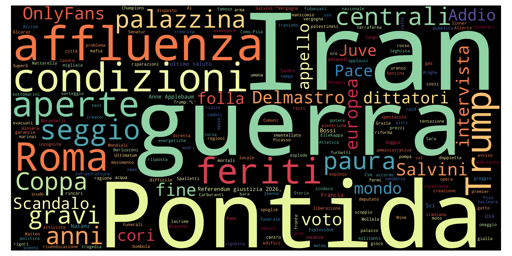
Top 10 unigrams
| Term | Frequency |
|---|---|
| iran | 9 |
| roma | 8 |
| affluenza | 6 |
| trump | 5 |
| pontida | 5 |
| guerra | 4 |
| seggio | 4 |
| usa | 4 |
| bossi | 4 |
| centrale | 3 |
Top 10 phrases
| Term | Frequency |
|---|---|
| referendum giustizia | 3 |
| stretto di hormuz | 3 |
| anne applebaum | 2 |
| ultimo saluto | 2 |
| a il | 1 |
Top 10 new terms (not present on previous day)
| Term | Current day frequency |
|---|---|
| affluenza | 6 |
| seggio | 4 |
| aperto | 3 |
| pace | 3 |
| stretto di hormuz | 3 |
| voto | 3 |
| condizione | 3 |
| referendum giustizia | 3 |
| paura | 3 |
| ultimatum | 3 |
Top 10 increasing terms (vs previous day)
| Term | Difference | Current day frequency | Previous day frequency |
|---|---|---|---|
| pontida | 3 | 5 | 2 |
| bossi | 3 | 4 | 1 |
| roma | 3 | 8 | 5 |
| europa | 2 | 3 | 1 |
| salvini | 1 | 2 | 1 |
| palazzo | 1 | 2 | 1 |
| mondo | 1 | 2 | 1 |
| gas | 1 | 2 | 1 |
| grave | 1 | 2 | 1 |
| sci | 1 | 2 | 1 |
Top 10 decreasing terms (vs previous day)
| Term | Difference | Current day frequency | Previous day frequency |
|---|---|---|---|
| anno | -6 | 1 | 7 |
| missile | -4 | 1 | 5 |
| referendum | -3 | 2 | 5 |
| usa | -3 | 4 | 7 |
| riforma | -3 | 1 | 4 |
| oro | -2 | 1 | 3 |
| auto | -2 | 1 | 3 |
| addio | -2 | 2 | 4 |
| raid | -1 | 1 | 2 |
| moto | -1 | 1 | 2 |
🇬🇧 UK — 22 Mar 2026
Updated: 01 Apr 2026, 19:42 CESTWordcloud
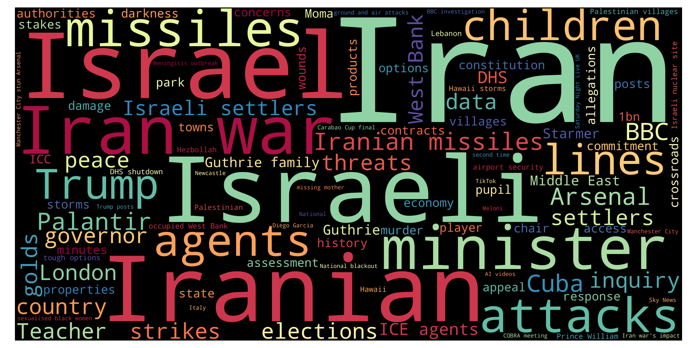
Top 10 unigrams
| Term | Frequency |
|---|---|
| iran | 28 |
| israeli | 6 |
| iranian | 6 |
| israel | 6 |
| minister | 5 |
| missile | 5 |
| attack | 5 |
| agent | 4 |
| child | 4 |
| line | 4 |
Top 10 phrases
| Term | Frequency |
|---|---|
| iran war | 6 |
| iranian missiles | 4 |
| israeli settlers | 3 |
| west bank | 3 |
| ice agents | 3 |
| guthrie family | 3 |
| middle east | 3 |
| occupied west bank | 2 |
| palestinian villages | 2 |
| prince william | 2 |
Top 10 new terms (not present on previous day)
| Term | Current day frequency |
|---|---|
| israel | 6 |
| cuba | 4 |
| iranian missiles | 4 |
| agent | 4 |
| bbc | 4 |
| palantir | 4 |
| arsenal | 4 |
| settler | 3 |
| middle east | 3 |
| dhs | 3 |
Top 10 increasing terms (vs previous day)
| Term | Difference | Current day frequency | Previous day frequency |
|---|---|---|---|
| iran | 10 | 28 | 18 |
| israeli | 4 | 6 | 2 |
| line | 3 | 4 | 1 |
| child | 3 | 4 | 1 |
| attack | 3 | 5 | 2 |
| gold | 2 | 3 | 1 |
| iranian | 2 | 6 | 4 |
| country | 2 | 3 | 1 |
| election | 1 | 3 | 2 |
| missile | 1 | 5 | 4 |
Top 10 decreasing terms (vs previous day)
| Term | Difference | Current day frequency | Previous day frequency |
|---|---|---|---|
| diego garcia | -2 | 2 | 4 |
| power | -2 | 1 | 3 |
| rule | -2 | 1 | 3 |
| basis | -2 | 1 | 3 |
| price | -2 | 1 | 3 |
| trump | -2 | 4 | 6 |
| judge | -1 | 1 | 2 |
| strike | -1 | 3 | 4 |
| meningitis outbreak | -1 | 2 | 3 |
| response | -1 | 2 | 3 |
🇮🇹 Italy — 21 Mar 2026
Updated: 01 Apr 2026, 19:42 CESTWordcloud

Top 10 unigrams
| Term | Frequency |
|---|---|
| iran | 8 |
| anno | 7 |
| usa | 7 |
| trump | 6 |
| referendum | 5 |
| missile | 5 |
| roma | 5 |
| ferito | 4 |
| ministro | 4 |
| giustizia | 4 |
Top 10 phrases
| Term | Frequency |
|---|---|
| paolo cirino pomicino | 6 |
| cirino pomicino | 4 |
| alto adige | 3 |
| diego garcia | 3 |
| ex ilva | 2 |
Top 10 new terms (not present on previous day)
| Term | Current day frequency |
|---|---|
| paolo cirino pomicino | 6 |
| cirino pomicino | 4 |
| ministro | 4 |
| riforma | 4 |
| jindal | 3 |
| diego garcia | 3 |
| marzo | 3 |
| alto adige | 3 |
| natanz | 3 |
| libero | 3 |
Top 10 increasing terms (vs previous day)
| Term | Difference | Current day frequency | Previous day frequency |
|---|---|---|---|
| missile | 4 | 5 | 1 |
| addio | 3 | 4 | 1 |
| giustizia | 3 | 4 | 1 |
| roma | 3 | 5 | 2 |
| usa | 3 | 7 | 4 |
| ferito | 3 | 4 | 1 |
| nave | 2 | 3 | 1 |
| primo | 2 | 3 | 1 |
| israele | 2 | 4 | 2 |
| referendum | 2 | 5 | 3 |
Top 10 decreasing terms (vs previous day)
| Term | Difference | Current day frequency | Previous day frequency |
|---|---|---|---|
| iran | -11 | 8 | 19 |
| meloni | -11 | 1 | 12 |
| pontida | -4 | 2 | 6 |
| bossi | -4 | 1 | 5 |
| delmastro | -4 | 1 | 5 |
| domenica | -4 | 1 | 5 |
| funerale | -3 | 2 | 5 |
| attacco | -3 | 1 | 4 |
| guerra | -2 | 3 | 5 |
| codardi | -2 | 1 | 3 |
🇬🇧 UK — 21 Mar 2026
Updated: 01 Apr 2026, 19:42 CESTWordcloud

Top 10 unigrams
| Term | Frequency |
|---|---|
| iran | 18 |
| trump | 6 |
| thousand | 5 |
| missile | 4 |
| strike | 4 |
| minister | 4 |
| fear | 4 |
| iranian | 4 |
| threat | 3 |
| party | 3 |
Top 10 phrases
| Term | Frequency |
|---|---|
| iran war | 7 |
| diego garcia | 4 |
| northern lights | 4 |
| robert mueller | 3 |
| meningitis outbreak | 3 |
| karen hauer | 3 |
| army chief | 3 |
| us base | 3 |
| sarah ferguson | 2 |
| chuck norris memes | 2 |
Top 10 new terms (not present on previous day)
| Term | Current day frequency |
|---|---|
| northern lights | 4 |
| diego garcia | 4 |
| missile | 4 |
| minister | 4 |
| us base | 3 |
| flooding | 3 |
| russian | 3 |
| party | 3 |
| meningitis outbreak | 3 |
| army chief | 3 |
Top 10 increasing terms (vs previous day)
| Term | Difference | Current day frequency | Previous day frequency |
|---|---|---|---|
| iran | 4 | 18 | 14 |
| strike | 2 | 4 | 2 |
| government | 2 | 3 | 1 |
| canterbury | 2 | 3 | 1 |
| response | 2 | 3 | 1 |
| iranian | 2 | 4 | 2 |
| airport | 2 | 3 | 1 |
| judge | 1 | 2 | 1 |
| thousand | 1 | 5 | 4 |
| prayer | 1 | 2 | 1 |
Top 10 decreasing terms (vs previous day)
| Term | Difference | Current day frequency | Previous day frequency |
|---|---|---|---|
| plan | -3 | 1 | 4 |
| remain | -2 | 1 | 3 |
| driver | -2 | 1 | 3 |
| hormuz | -2 | 2 | 4 |
| search | -2 | 1 | 3 |
| police | -2 | 1 | 3 |
| bone | -1 | 2 | 3 |
| iran war | -1 | 7 | 8 |
| rule | -1 | 3 | 4 |
| fan | -1 | 1 | 2 |
🇮🇹 Italy — 20 Mar 2026
Updated: 01 Apr 2026, 19:42 CESTWordcloud

Top 10 unigrams
| Term | Frequency |
|---|---|
| iran | 19 |
| meloni | 12 |
| trump | 8 |
| anno | 8 |
| pontida | 6 |
| guerra | 5 |
| delmastro | 5 |
| morto | 5 |
| funerale | 5 |
| domenica | 5 |
Top 10 phrases
| Term | Frequency |
|---|---|
| umberto bossi | 5 |
| isola di kharg | 3 |
| città vecchia | 2 |
| kim jong figlia | 2 |
| nessuna missione militare | 2 |
| lega nord | 2 |
Top 10 new terms (not present on previous day)
| Term | Current day frequency |
|---|---|
| pontida | 6 |
| migranti | 5 |
| funerale | 5 |
| guerra | 5 |
| bossi | 5 |
| domenica | 5 |
| nemico | 4 |
| gemonio | 3 |
| fondatore | 3 |
| nato | 3 |
Top 10 increasing terms (vs previous day)
| Term | Difference | Current day frequency | Previous day frequency |
|---|---|---|---|
| iran | 6 | 19 | 13 |
| morto | 4 | 5 | 1 |
| attacco | 3 | 4 | 1 |
| minore | 3 | 4 | 1 |
| misura | 3 | 4 | 1 |
| piano | 3 | 4 | 1 |
| meloni | 2 | 12 | 10 |
| figlio | 2 | 4 | 2 |
| raid | 1 | 3 | 2 |
| protesta | 1 | 2 | 1 |
Top 10 decreasing terms (vs previous day)
| Term | Difference | Current day frequency | Previous day frequency |
|---|---|---|---|
| referendum | -5 | 3 | 8 |
| ucraina | -4 | 3 | 7 |
| altro | -4 | 1 | 5 |
| usa | -4 | 4 | 8 |
| addio | -3 | 1 | 4 |
| soldato | -3 | 1 | 4 |
| paese | -3 | 1 | 4 |
| miliardo | -3 | 1 | 4 |
| umberto bossi | -2 | 5 | 7 |
| impianto | -2 | 1 | 3 |
🇬🇧 UK — 20 Mar 2026
Updated: 01 Apr 2026, 19:42 CESTWordcloud

Top 10 unigrams
| Term | Frequency |
|---|---|
| iran | 14 |
| bill | 6 |
| trump | 6 |
| reform | 5 |
| kent | 5 |
| basis | 4 |
| rule | 4 |
| thousand | 4 |
| plan | 4 |
| hundred | 4 |
Top 10 phrases
| Term | Frequency |
|---|---|
| iran war | 8 |
| ricky hatton | 4 |
| nigel farage | 4 |
| jenni murray | 3 |
| former bbc hour presenter | 3 |
| eu loan | 3 |
| ira bombings | 3 |
| gerry adams | 3 |
| energy bills | 3 |
| muriel mckay | 3 |
Top 10 new terms (not present on previous day)
| Term | Current day frequency |
|---|---|
| hundred | 4 |
| ricky hatton | 4 |
| gerry adams | 3 |
| job | 3 |
| investigate | 3 |
| remain | 3 |
| leavers | 3 |
| energy bills | 3 |
| brexit | 3 |
| remainers | 3 |
Top 10 increasing terms (vs previous day)
| Term | Difference | Current day frequency | Previous day frequency |
|---|---|---|---|
| bill | 4 | 6 | 2 |
| reform | 4 | 5 | 1 |
| rule | 3 | 4 | 1 |
| kent | 3 | 5 | 2 |
| cost | 2 | 3 | 1 |
| thousand | 2 | 4 | 2 |
| plan | 2 | 4 | 2 |
| ukraine | 2 | 4 | 2 |
| hormuz | 2 | 4 | 2 |
| study | 1 | 2 | 1 |
Top 10 decreasing terms (vs previous day)
| Term | Difference | Current day frequency | Previous day frequency |
|---|---|---|---|
| iran | -16 | 14 | 30 |
| price | -5 | 3 | 8 |
| israel | -4 | 2 | 6 |
| labour | -3 | 2 | 5 |
| speaker | -2 | 1 | 3 |
| offence | -2 | 1 | 3 |
| muslim | -2 | 2 | 4 |
| iran war | -2 | 8 | 10 |
| nhs | -2 | 2 | 4 |
| tory | -2 | 2 | 4 |
🇮🇹 Italy — 19 Mar 2026
Updated: 01 Apr 2026, 19:42 CESTWordcloud

Top 10 unigrams
| Term | Frequency |
|---|---|
| iran | 13 |
| meloni | 10 |
| trump | 8 |
| anno | 8 |
| referendum | 8 |
| usa | 8 |
| europa | 7 |
| ucraina | 7 |
| delmastro | 5 |
| altro | 5 |
Top 10 phrases
| Term | Frequency |
|---|---|
| umberto bossi | 7 |
| umberto bossi fondatore lega | 3 |
| stretto di hormuz | 3 |
| guerra iran | 3 |
| stati uniti | 2 |
| altri paesi | 2 |
| sincero democratico | 2 |
| rischio terrorismo | 2 |
| consiglio europeo | 2 |
| lega nord | 2 |
Top 10 new terms (not present on previous day)
| Term | Current day frequency |
|---|---|
| umberto bossi | 7 |
| orban | 4 |
| soldato | 4 |
| miliardo | 4 |
| lega | 4 |
| paese | 4 |
| addio | 4 |
| prestito | 3 |
| invio | 3 |
| regola | 3 |
Top 10 increasing terms (vs previous day)
| Term | Difference | Current day frequency | Previous day frequency |
|---|---|---|---|
| anno | 7 | 8 | 1 |
| ucraina | 6 | 7 | 1 |
| europa | 5 | 7 | 2 |
| meloni | 4 | 10 | 6 |
| altro | 4 | 5 | 1 |
| leader | 3 | 4 | 1 |
| zelensky | 2 | 3 | 1 |
| delmastro | 2 | 5 | 3 |
| pace | 2 | 3 | 1 |
| riforma | 2 | 3 | 1 |
Top 10 decreasing terms (vs previous day)
| Term | Difference | Current day frequency | Previous day frequency |
|---|---|---|---|
| gas | -3 | 1 | 4 |
| svizzera | -3 | 2 | 5 |
| petrolio | -3 | 1 | 4 |
| morte | -3 | 1 | 4 |
| governo | -3 | 3 | 6 |
| carburante | -3 | 1 | 4 |
| cabinovia | -2 | 1 | 3 |
| morto | -2 | 1 | 3 |
| onu | -2 | 2 | 4 |
| attacco | -2 | 1 | 3 |
🇬🇧 UK — 19 Mar 2026
Updated: 01 Apr 2026, 19:42 CESTWordcloud

Top 10 unigrams
| Term | Frequency |
|---|---|
| iran | 30 |
| price | 8 |
| trump | 6 |
| israel | 6 |
| labour | 5 |
| hour | 4 |
| death | 4 |
| tory | 4 |
| muslim | 4 |
| nhs | 4 |
Top 10 phrases
| Term | Frequency |
|---|---|
| iran war | 10 |
| nigel farage | 5 |
| interest rates | 4 |
| bank of england | 3 |
| tropical cyclone narelle | 3 |
| deciphering trump post | 2 |
| gas field attacks | 2 |
| faisal islam | 2 |
| tory mp | 2 |
| muslim prayer event | 2 |
Top 10 new terms (not present on previous day)
| Term | Current day frequency |
|---|---|
| nigel farage | 5 |
| nhs | 4 |
| japan | 4 |
| muslim | 4 |
| tropical cyclone narelle | 3 |
| basis | 3 |
| bank of england | 3 |
| offence | 3 |
| denmark | 3 |
| speaker | 3 |
Top 10 increasing terms (vs previous day)
| Term | Difference | Current day frequency | Previous day frequency |
|---|---|---|---|
| price | 7 | 8 | 1 |
| iran war | 6 | 10 | 4 |
| hour | 3 | 4 | 1 |
| abortion | 2 | 3 | 1 |
| labour | 2 | 5 | 3 |
| death | 2 | 4 | 2 |
| interest rates | 2 | 4 | 2 |
| nigeria | 1 | 3 | 2 |
| plan | 1 | 2 | 1 |
| consequence | 1 | 2 | 1 |
Top 10 decreasing terms (vs previous day)
| Term | Difference | Current day frequency | Previous day frequency |
|---|---|---|---|
| trump | -4 | 6 | 10 |
| teenager | -3 | 1 | 4 |
| bridge | -3 | 1 | 4 |
| london | -3 | 2 | 5 |
| child | -2 | 1 | 3 |
| starmer | -2 | 2 | 4 |
| middle east | -2 | 2 | 4 |
| election | -2 | 1 | 3 |
| reform | -2 | 1 | 3 |
| thousand | -2 | 2 | 4 |